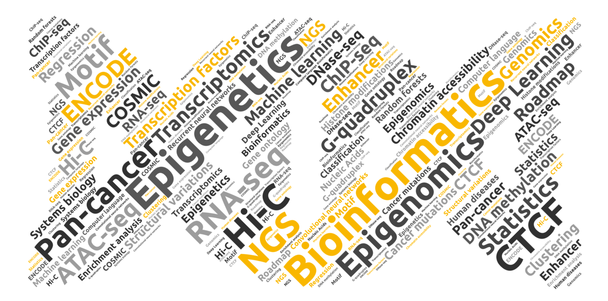
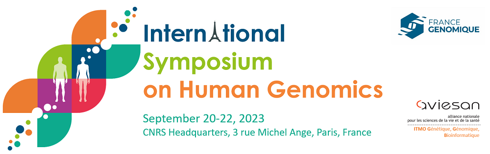
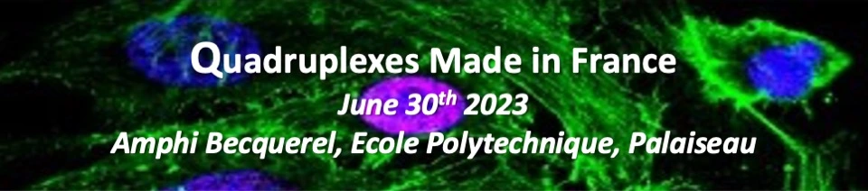
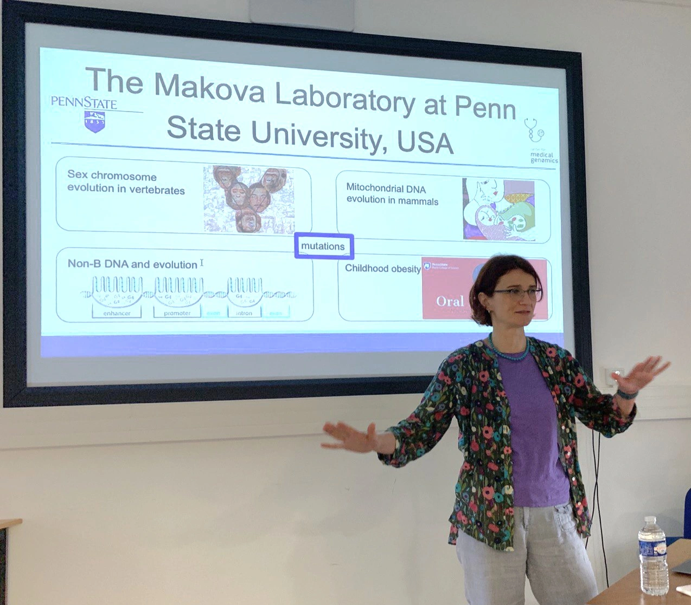
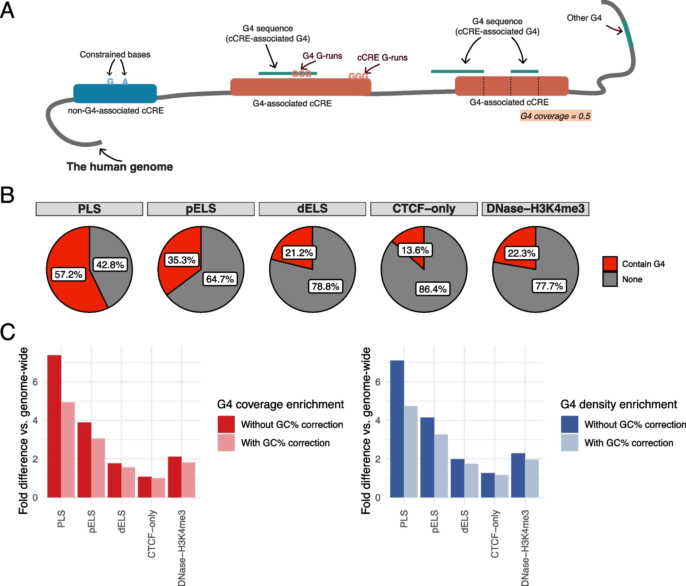
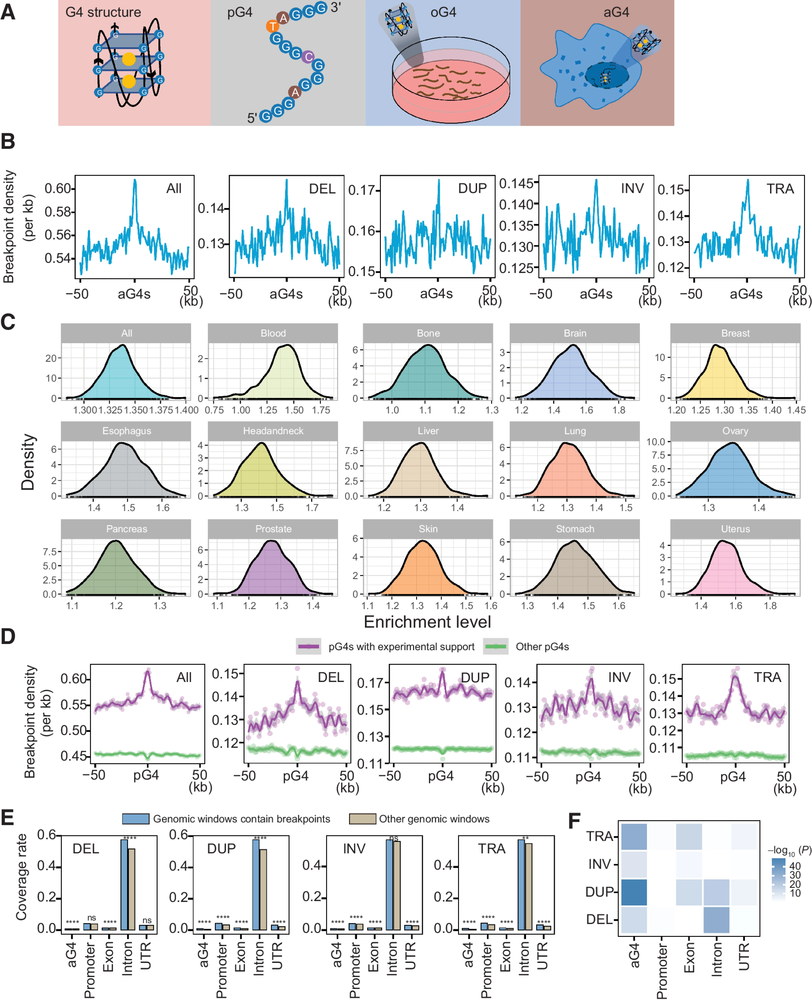
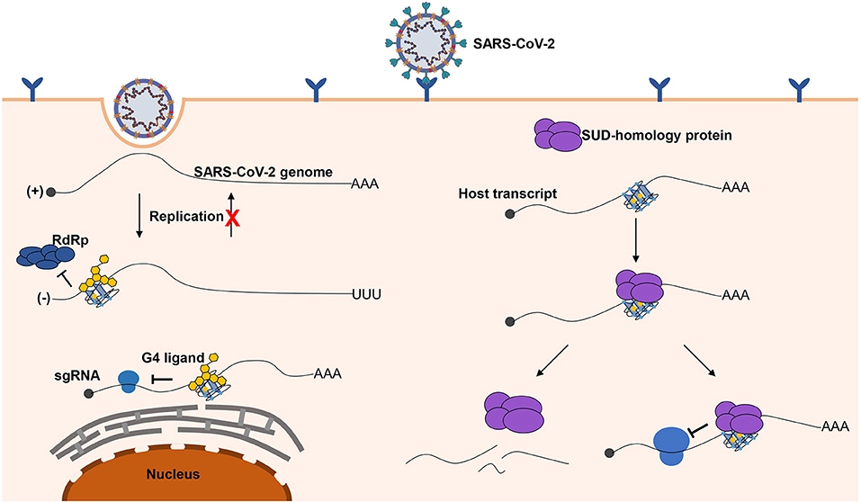
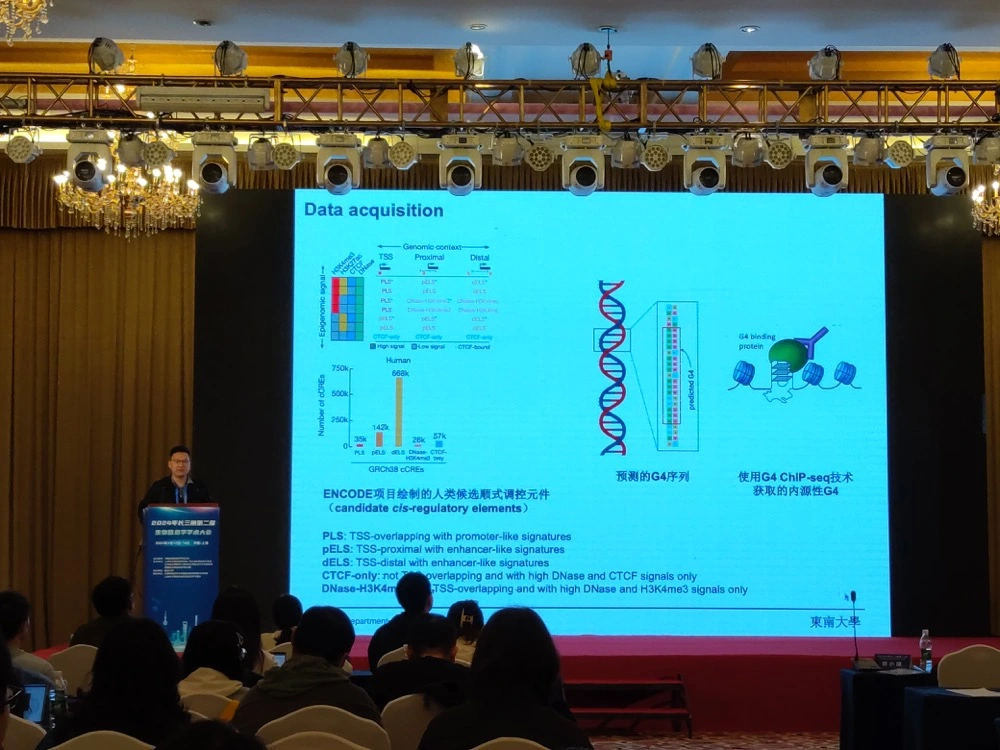

Rongxin Zhang

The greatest truths are the simplest.
About Me
Hi, I'm Rongxin, and welcome!
I am currently a postdoctoral researcher at the Feinberg School of Medicine, Northwestern University. Prior to this, I received my Ph.D. from the State Key Laboratory of Digital Medical Engineering at Southeast University, during which I did part of my Ph.D. training in Dr. Jean-Louis Mergny's lab at École Polytechnique in France.
My Ph.D. projects involved uncovering the regulatory role of G-quadruplexes (G4s), special non-B nucleic acid secondary structures, and their implication in diseases.
Moving forward, and with the goal of unlocking the secrets hidden within the "Book of Heaven" (the human genome), my research interests lie in the analysis and interpretation of large-scale human multi-omics data through bioinformatics approaches. More specifically, I aim to understand and elucidate the regulatory mechanisms of the human genome—for example, the impact of sequence variants and chromatin-level regulatory features on genome function—and how their dysregulation contributes to the development and progression of human diseases, such as cancer. In addition, I am passionate about applying machine learning methods to model and address unresolved challenges in biology and medicine.
Education
| Attained Degree / Status | Duration of Study | Supervisor | Institution |
|---|---|---|---|
| Visiting Ph.D. | 2022 - 2023 | Jean-Louis Mergny | Laboratory of Optics and Biosciences, École Polytechnique, Palaiseau, FRANCE |
| Ph.D. | 2018 - 2024 | Xiao Sun | Deapartment of Bioinformatics, Southeast Univeristy, Nanjing, CHINA |
| B.S. | 2014 - 2018 | Qianghu Wang | Deapartment of Bioinformatics, Nanjing Medical Univeristy, Nanjing, CHINA |
Research Interests
- Cancer Epigenomics & Epigenetics
- Gene Regulatory Mechanisms
- Human Constrained Sequences, Functional Sequences, and Their Variants
- Machine Learning Applications in Biology
- Non-canonical Nucleic Acid Secondary Structures, particularly G-quadruplexes
- Bioinformatics Software & Database Development
News
- [ Dec. 2024] Our G4SNVHunter package was released in the devel branch of Bioconductor. This R package was designed to evaluate the impact of small-scale variants on G4 formation propensity. The vignette is available at this link.
- [ Jul. 2024] Rongxin successfully defended his PhD dissertation! 🎉🎉
- [ Apr. 2024] The Second Bioinformatics Academic Conference of the Yangtze River Delta was successfully held in Shanghai. Rongxin delivered a presentation titled 'Structure Matters: Unraveling G-Quadruplex Influence on Regulatory Elements' as a young scholar and was awarded the third prize for Best Young Scholar Presentation.
- [ Nov. 2023] The 13th Bioinformatics Conference of Jiangsu Province was successfully held at Nantong University. Rongxin won the first prize for the poster exhibition.
- [ Sept. 2023] The International Symposium on Human Genomics was successfully held at the CNRS headquarters in Paris. Rongxin presented a poster showing his latest research progress on how G-quadruplexes affect the use of promoters.
 - [ Jun. 2023] École Polytechnique (scheduled at the Pasteur Institute but changed due to the COVID-19 pandemic) successfully hosted the 'Quadruplexes Made in France' day.
Fifteen researchers from all over France in the field of G4 presented fascinating reports!
 - [ Jun. 2023] Professor Kateryna Makova from Pennsylvania State University delivered a presentation titled 'Non-B DNA and Evolution of Our Genomes' at the Laboratory for optics & biosciences, upon the invitation of Professor Jean-Louis Mergny from École Polytechnique.
 - [ Jun. 2023] Rongxin participated in the G4 ANR seminar held in Marseille and gave an oral presentation.
- [ Mar. 2023] The Ph.D. student I supervised at École Polytechnique, Kardelen, successfully defended her project. [Investigation of Promoter-G4 Oncogenes]
- [ Oct. 2022] Start my Ph.D. visit at École Polytechnique in Paris, France.
- [ Jul. 2022] Oral presentation at the 2022 Young Scholars Forum on Bioinformatics and Artificial Intelligence. [Chinese Association for Artificial Intelligence]
Events
Data in this module collected since 2022
Fundings
- [No. 61972084] The National Natural Science Foundation of China. (Participant, Ranked 4th)
- [No. KYCX21_0143] The Postgraduate Research & Practice Innovation Program of Jiangsu Province. (Project Host)
Academic Services
Journal Reviewers
Selected Publications
Full lists could be found at Google scholar.
-
 G4 & CRE
-
 G4 & SVCancer Research, 2023.
-
 G4 & SARS-CoV-2
Books
-
BioinformaticsBiological Data Analysis and PracticeLanguage: Simplified Chinese.
Publisher: Southeast University Press.
Publication date: December 2021.
Oral Presentations
-
 ShanghaiStructure Matters: Unraveling G-Quadruplex Influence on Regulatory ElementsThe Second Bioinformatics Academic Conference of the Yangtze River Delta, 2024, Shanghai.
-
NanjingIntegrative analyses reveal G-quadruplex structure as a key modulator of cancer genome instabilityChinese Association for Artificial Intelligence Young Scholars Forum on Bioinformatics and Artificial Intelligence, 2022, NanJing.
-
NanjingGenomic distribution and potential role of RNA G-quadruplexes in SARS-CoV-2The 11th Bioinformatics Conference of Jiangsu Province, 2021, NanJing.
Keep in touch with me
Website theme: Minimal Light theme.
Website maintained by Rongxin.
Copyright ©2022- Rongxin Zhang All Rights Reserved.